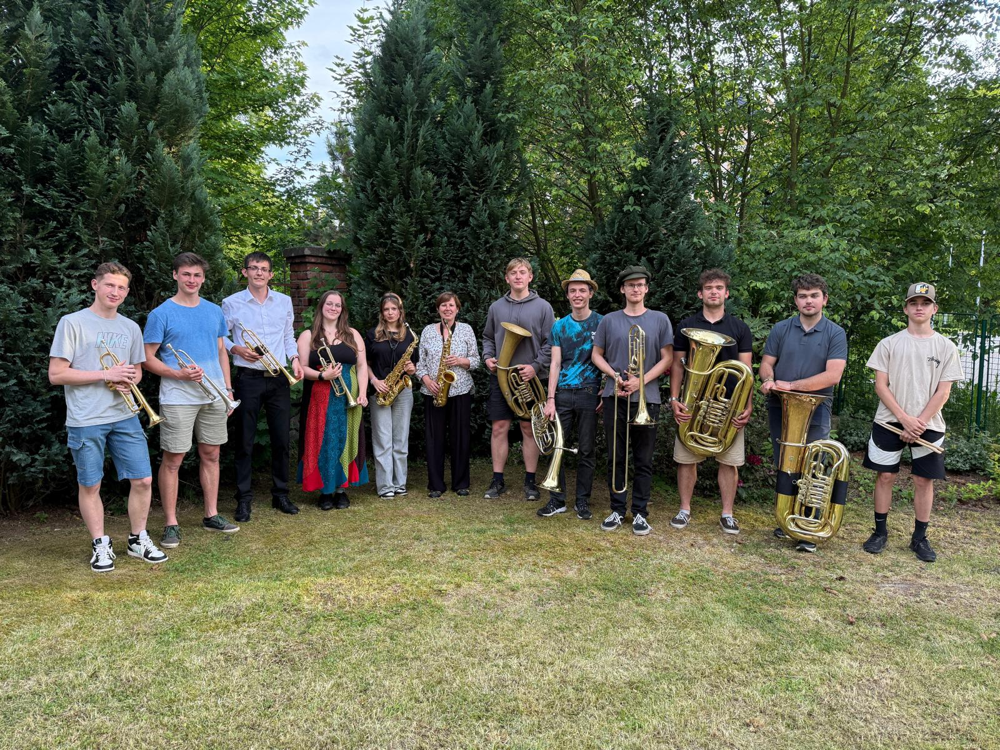
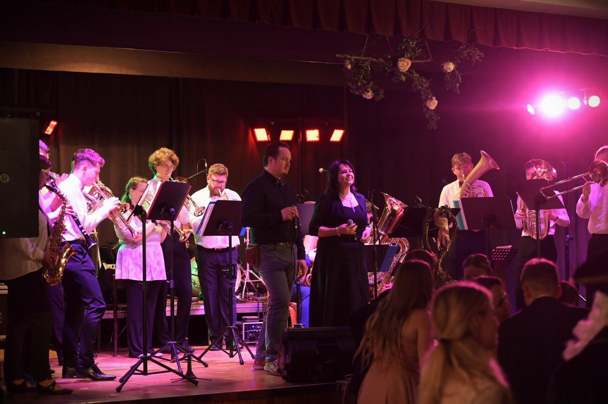
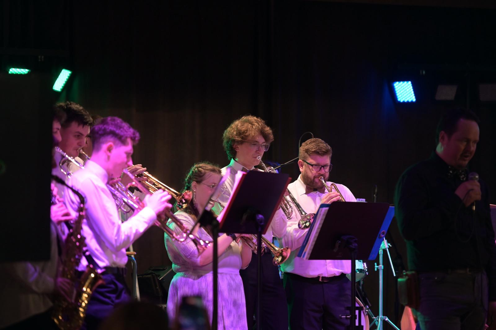
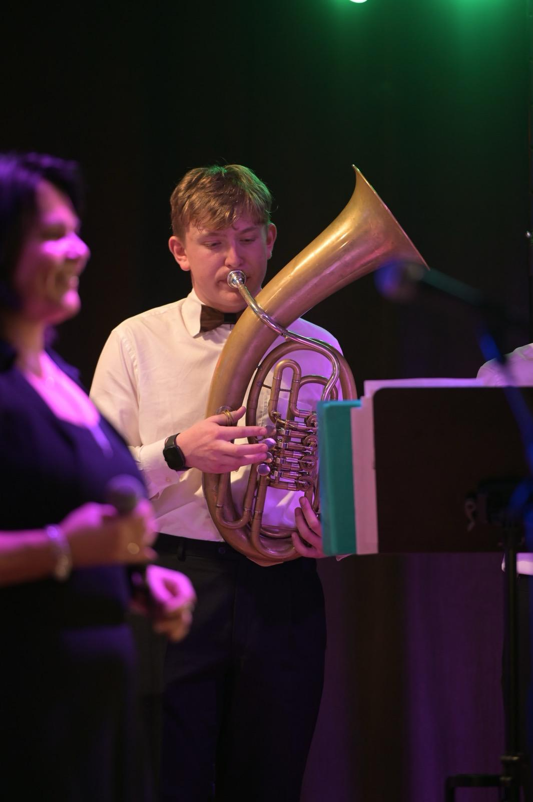
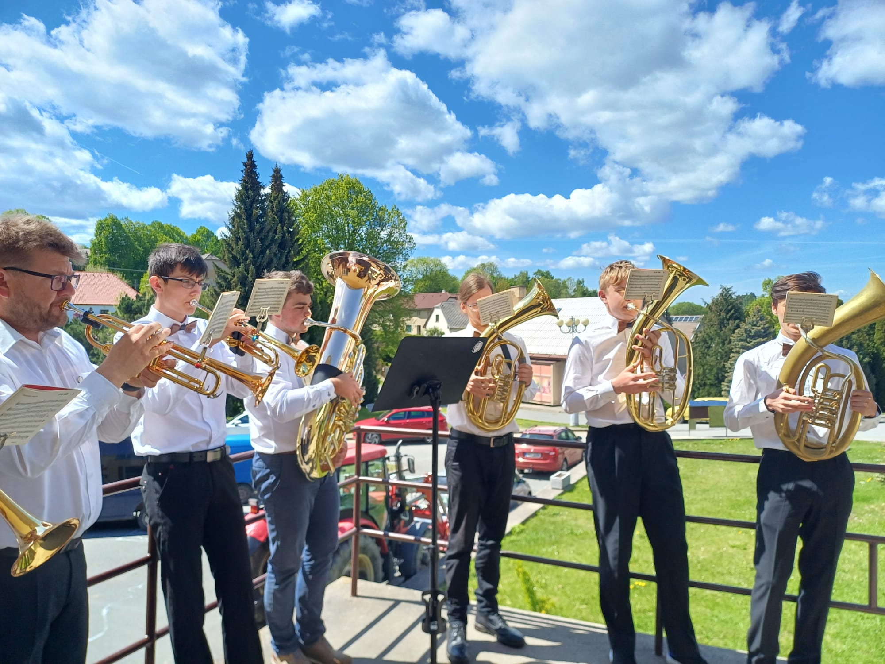
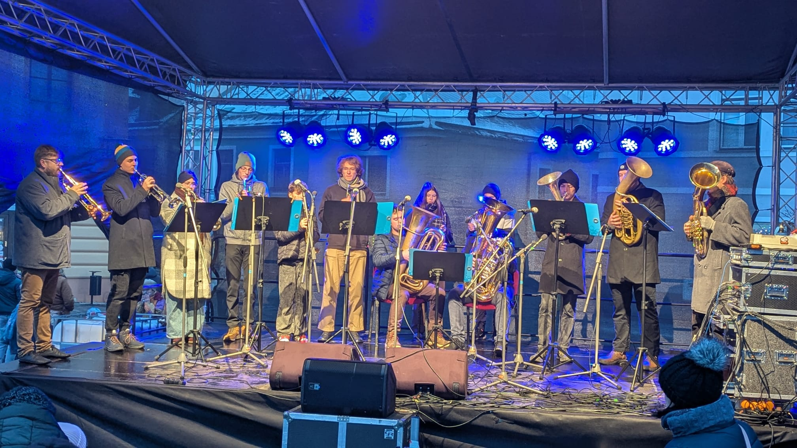

(Ne)Plechy
Žesťová kapela plná energie, muziky a dobré nálady.
Hrajeme všude tam, kde chcete slyšet pořádný zvuk.
Kapela
Kapela (Ne)Plechy
Jsme parta hudebních nadšenců, která si říká (Ne)Plechy. Hrajeme spolu od konce roku 2025, pocházíme z Poličky a náš repertoár obsahuje širokou škálu žánrů. Od polek, valčíků nebo pochodů, přes funk, rock, až k popu a náš playlist stále rozšiřujeme. Hrajeme instrumentálně, v našem souboru uslyšíte trubky, saxofony, pozoun, tuby, tenory a bicí.
Za vznikem kapely (Ne)Plechy stojí skupina mladých muzikantů, kteří mají rádi hudbu a věnují se jí již několik let. Přesně to bylo impulsem k tomu, aby se začali scházet pravidelně a radost z tónů sdíleli s ostatními muzikanty i širokým okolím. Rádi Vám zahrajeme na oslavě narozenin, přehlídce nebo jiné společenské akci.

Fotogalerie





1 / 9
Kontakty
Rádi zahrajeme na vaši akci! Napište nebo zavolejte a domluvíme se.